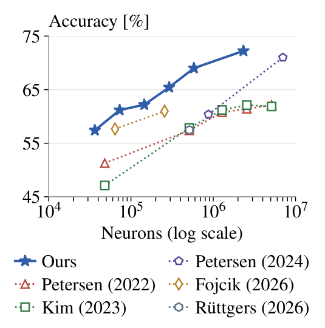
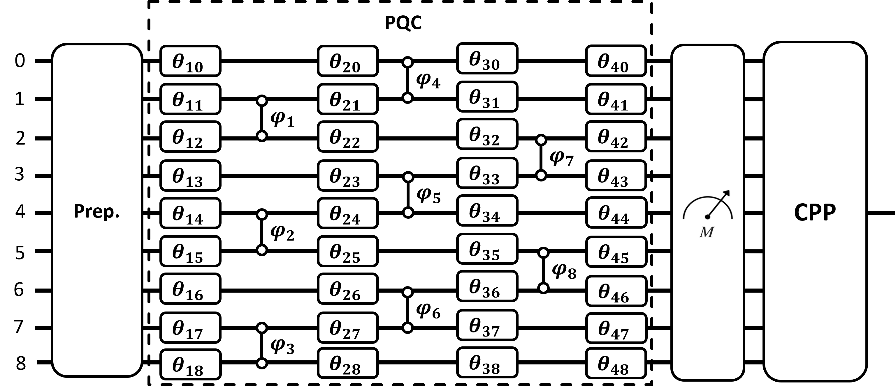
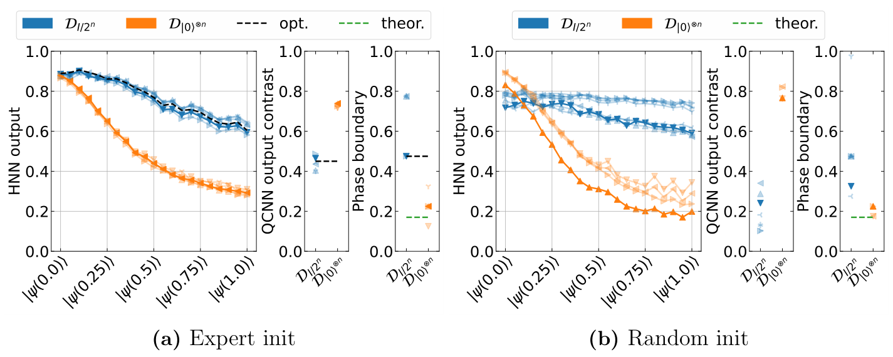
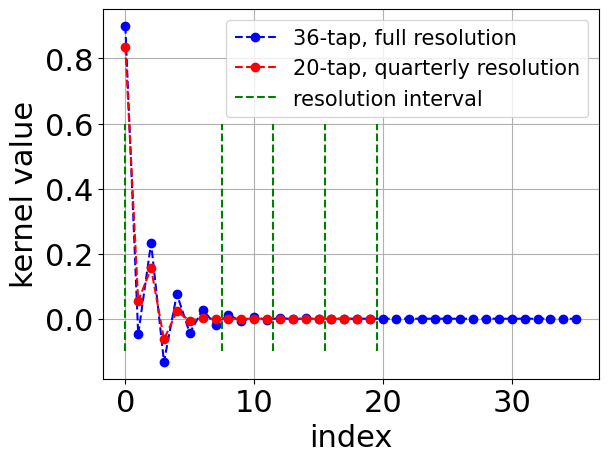
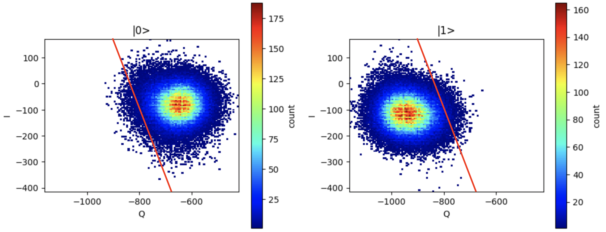
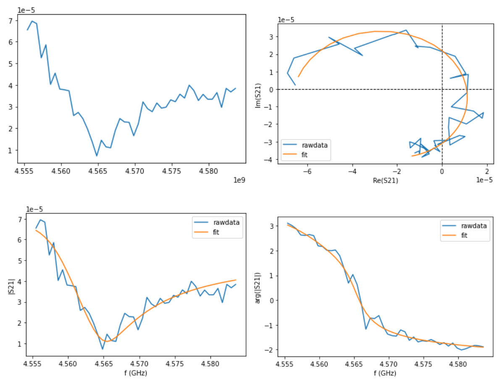
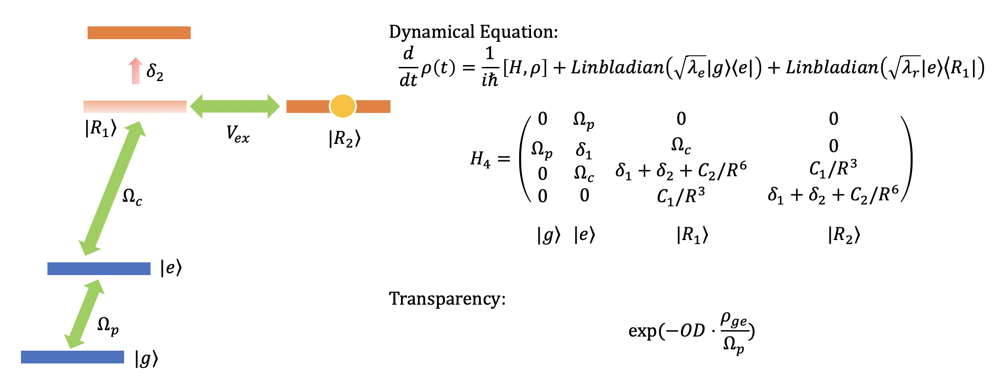
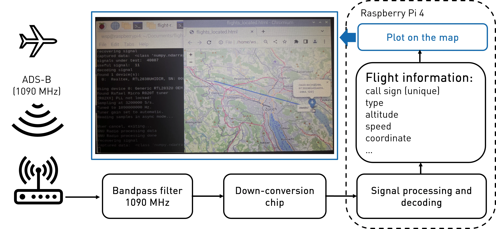

上海均直资产管理有限公司
量化研究实习
- 搭建 A 股 Barra CNE6 风险模型，用于收益归因与风险预测。
- 使用 A 股股本数据复现中证 500 指数日频权重及点位，日内指数点位计算最大相对误差小于 0.5 bp。
01 / 工作与研究经历
量化研究实习
2025 年 9 月—2026 年 3 月
2023 年 10 月—2024 年 3 月
02 / 项目精选
从复杂数据中学习，在噪声环境中优化，将分析方法实现为实用工具。
项目 01
传统神经网络依赖浮点运算，在计算资源有限的硬件上进行推理时，成本可能较高。布尔网络通过逻辑运算完成计算，但网络中的运算及连接具有离散性，使得模型压缩与精度保持难以兼顾。本项目针对图像分类任务，研究如何改善分类精度与网络规模之间的权衡。
我实现并改进了紧凑型卷积布尔网络，包括从零构建 CUDA 卷积算子，以支持高效计算。研究结合网络结构设计与底层算子实现，并在 MNIST 和 CIFAR-10 上开展评估。相对于所比较的基线方法，模型以 3–45 倍的神经元数量压缩率，实现了相当或更高的分类精度。
图中纵轴为分类准确率，横轴为采用对数刻度的神经元数量。每条曲线表示一种方法在不同模型规模下的表现；数据点越靠左上方，代表模型越小、精度越高。蓝色的“Ours”曲线展示了本项目的主要成果：通过更紧凑的网络结构，在显著减少神经元数量的同时保持有竞争力的分类表现。
高效机器学习 / CUDA / 离散优化

项目 02
识别量子相需要捕捉多个量子比特之间的关联，而不能仅独立观察每个量子比特。我的硕士论文研究了如何在有噪声的超导量子硬件上训练量子—经典混合模型，以区分表面码的拓扑态与平庸态。我在 4 比特和 9 比特处理器上实现并训练了模型，利用进化策略优化量子线路参数。
第一幅图展示了 9 比特分类器的量子线路。每条水平线表示一个量子比特；“Prep.”用于制备输入态，虚线框中的 PQC 是参数化量子线路。标有 θ 的方框是单比特 Y 旋转门，标有 φ、由竖线连接的圆圈是双比特受控相位门。交替的门层对输入态进行变换，随后通过 M 测量得到比特串。CPP 表示经典后处理，将测量结果转化为对输入态所属量子相的预测。
本项目实现了实验中的模型训练与量子相分类，并研究了训练数据和初始化条件对泛化表现的影响。我通过验证态与 ROC 分析，比较训练收敛、相边界探测及单次测量分类的表现。一个关键发现是：模型即使能够区分有限的训练样本，也不一定学到了量子相之间更一般的差别；采用更具代表性的平庸态训练数据，可以改善验证表现。这项工作建立了可在实验中执行的学习方法，并未据此宣称已证明量子计算优势。
第二幅图展示了 9 比特模型在专家初始化（左组）和随机初始化（右组）下的相边界探测结果。各组的主面板给出模型平均输出随基态 |ψ(h)⟩ 的变化：扰动场逐渐增强时，输入态由左侧的拓扑态向右侧的平庸相演变。蓝色曲线对应以最大混合态作为平庸态样本的训练集，橙色曲线对应以全零乘积态作为平庸态样本的训练集。旁边的面板分别汇总输出对比度和预测的相边界位置；绿色虚线为理论参考，部分面板中的黑色虚线为最优线路参考。在这些实验中，全零态训练集产生了更强的输出对比度和更接近参考值的边界预测；但在更全面的验证测试中，代表性更强的平庸态训练集表现更好，说明相边界探测清晰并不等同于分类泛化能力更强。
进化策略 / 分类 / ROC 分析


项目 03
量子控制电子设备需要输出精确的脉冲，但更高的数字精度与额外校正环节也会消耗硬件资源。本次实习研究了器件的非理想特性如何沿控制信号链传播，以及它们如何影响量子比特操作的保真度。我建立了结合脉冲生成、LTspice 模拟电路仿真与量子比特动力学的数值模型，并开展脉冲参数优化以及噪声、失真分析。
图中展示了一项具体的工程取舍：简化用于预补偿的有限冲激响应（FIR）滤波器。预补偿通过修改输出波形，抵消后续模拟信号链造成的失真。横轴为滤波器系数的索引，纵轴为系数值。蓝点表示全分辨率的 36 tap滤波器；红点表示一种 20 tap方案，其部分区间采用较低的时间分辨率；绿色虚线标出了分辨率区间。
滤波器 kernel 尾部的系数较小、变化较慢，因此适合采用较低分辨率处理。在对应的仿真比较中，两种预补偿方案都提高了受失真影响的 iSWAP 门的保真度，且两者的不保真度接近。结果支持在保持所建模型中控制质量的同时降低滤波器复杂度，也提供了在修改硬件前评估资源与精度取舍的方法。
数值仿真 / 信号处理 / 优化

项目 04
超导量子比特读出需要从含噪声的微波测量中判断量子态。探测脉冲的形状会影响基态与激发态在测量结果中的可区分程度。本次研究实习以实验测量为优化目标，考察遗传算法能否找到优于传统矩形脉冲的读出波形。
我将候选脉冲编码为二进制序列，并通过 IQ 测量评估一组波形。信噪比较高的脉冲更有可能被选为亲代，通过交叉和变异生成下一代。图中展示了这类测量数据：分别制备基态和激发态后，在同相／正交（IQ）平面上得到二维直方图。颜色表示采样次数，红线表示判别边界。两类分布间距越大、分布越集中，越容易可靠地判断量子比特状态。
实验找到了相对于矩形脉冲基线具有更高读出信噪比的脉冲形状。在报告记录的一次实验中，最佳矩形脉冲的信噪比为 2.2138，遗传搜索在 50 代后达到 2.7168；两者使用了报告中说明的不同衰减设置。这一结果展示了含噪实验环境中的波形优化能力，并不意味着所有工作条件下都能获得相同的保真度提升。
遗传算法 / 实验优化 / 信噪比

项目 05
谐振腔测量同时包含透射信号的幅度与相位信息。当干涉使幅度峰变成谷，或相邻谐振重叠时，传统寻峰方法可能漏检。本项目利用完整复透射系数的几何结构识别谐振，而不只依赖幅度曲线上突出的峰。
校正电缆延迟后，算法使用霍夫变换在复平面上搜索圆弧，并扩展候选数据区间，通过拟合提取谐振频率与品质因数。图中展示了一个难以检测的谐振谷案例：左上为测得的幅度特征，右上为复平面中的透射数据及圆拟合，下方两个面板比较测量数据与拟合得到的幅度和相位。蓝线表示原始数据，橙线表示拟合结果。
复平面、幅度与相位三种视角下的一致性，支持将这一非典型峰状特征识别为谐振。报告还展示了重叠模式的检测。我将分析方法封装为 Python 图形界面，用于参数拟合和不同温度下的模式跟踪。主要成果是一套更充分利用实验信息的频谱分析工具，同时明确保留了搜索分辨率与运行时间之间的取舍。
特征提取 / 复数数据 / Python

项目 06
电磁诱导透明（EIT）通过耦合原子跃迁，改变弱探测光穿过原子系综的响应。与系综相互作用的里德堡量子比特可以改变这一响应，为探测其存在提供光学信号。本学期项目构建数值工具，比较单独原子系综与耦合里德堡量子比特后的响应，并探索量子比特探测的测量条件。
图中给出了物理模型：左侧的探测场与耦合场连接基态、中间态和里德堡能级；额外的里德堡态与交换相互作用使响应依赖于量子比特。右侧的哈密顿量描述耦合、失谐和相互作用，密度矩阵演化方程包含耗散项，透明度表达式则将仿真得到的原子相干性与可观测的光学信号联系起来。
我实现了 Python 交互界面，使用户能够调整参数并比较三能级模型与有相互作用的四能级模型。在计算得到的 EIT 响应曲线上选择测量点后，用户可以查看模拟的光子分布。项目成果是将微观动力学模型与探测信号联系起来的探索性科学工具，并非实验上已实现读出性能的声明。
数值建模 / 量子动力学 / 科学软件

项目 07
本独立项目将接收到的飞机无线电信号转化为可读的航班信息和地理显示。目标是建立连接无线电接收、数字信号处理、报文解码与可视化的完整系统，直接处理接收到的信号。
图中展示了接收、解码环节及系统生成的地图示例。1090 MHz 带通滤波器选择目标频段，下变频环节将信号转换为适合数字处理的形式。软件随后恢复并解码报文，提取呼号、高度、速度和坐标等记录。地图截图展示了如何将解码结果转换为用户可以查看的空间信息。
代码仓库包含接收与 IQ 转换代码、解码逻辑、运行脚本和生成的地图示例。主要成果是实现了从采集的无线电样本到可理解航班记录和地图位置的完整链路。网页图片为已记录的输出示例，并非实时航班信息流；项目展示了硬件、信号分析与软件展示之间的集成能力。
信号处理 / Python / GNU Radio

03 / 教育与技能
2022 年 9 月—2025 年 6 月
量子工程硕士
GPA 5.55 / 6.0
数理统计、机器学习、神经网络理论、信息论。
2018 年 9 月—2022 年 6 月
学士 · 原子与分子物理
GPA 3.92 / 4.3 · 前 10%
线性代数、微积分、数值方法、数学物理。
国家奖学金（2019）
严济慈物理英才项目（2019—2022）
校级优秀毕业生（2022）
04 / 联系方式
我希望从事结合数学建模、机器学习与工程实践的工作，欢迎通过邮件联系。
harrywang1126@outlook.com